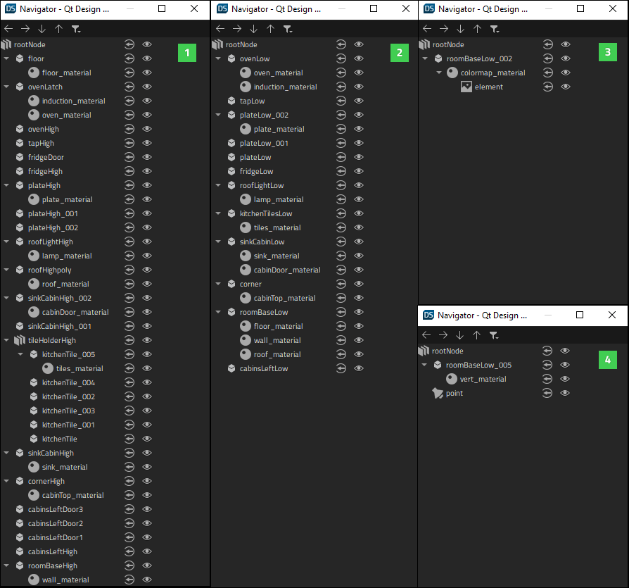
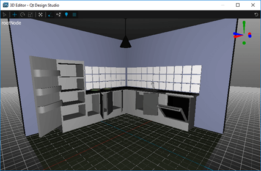
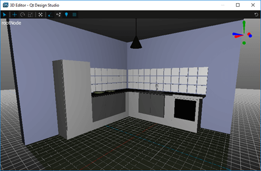
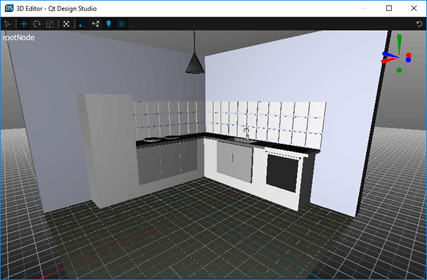

Creating Optimized 3D Scenes
In Qt Design Studio, you can use various means to create a 3D scene. Your choice of strategy should always depend on the target platform of your scene. The way the content of your scene is authored can have dramatic effects on the runtime performance of your UI. The Optimal 3D Scene described below illustrates four different ways to create a scene. Also see guidelines for optimizing the graphics performance of your 3D scene and Best Practices for 3D Scenes Based on Use Cases.
The Optimal 3D Scene Example
The Optimal 3D Scene example features four versions of the same kitchen scene that have been created using different strategies: High, Low, Combined, and Vertex Color. The High Scene includes a significantly higher number of objects compared to the other versions of the scene. The Low, Combined and Vertex scenes include less objects since they have been optimized by, for example, combining geometry and baking materials into textures. The following image displays the components in each scene in Navigator to illustrate the structural differences between the scenes.

The High Scene

The High scene (1) includes a total of 27 objects. The scene is otherwise similar to the Low scene, but has more details and animated components, such as cabinet doors that can be opened and a latch for the oven.
The Low Scene

The Low scene (2) includes a total of 12 objects. Each model, for example cabinets, lamps, plates, and the sink, are separate meshes.
The Combined Scene

The Combined scene (3) has all the meshes combined into a single object. All materials are baked into one single texture.
The Vertex Color Scene

The Vertex Color scene (4) has all the meshes combined into a single object, and colors for the mesh are provided from .mesh file's vertex data, which includes one material and no textures.
Optimizing Your 3D Scene
To optimize the graphics performance of your 3D scene, you should first consider whether you need to animate the 3D objects, lights, camera, or other components in your scene. If not, simplify the scene structure by, for example, combining geometries and baking materials into textures. Ideally, pre-render your 3D image into a 2D image. You should not waste resources by rendering static 3D objects. You should also check if your scene has multiple instances of the same mesh. If so, import only one instance of the mesh, duplicate it in the scene, and use the same material for each duplicate.
See also the following guidelines related to scene graph, asset complexity, CPU specific optimization, and model geometry.
Scene Graph
The scene graph is the hierarchy of nodes that describe the scene to be rendered.
In Qt Design Studio, the scene graph is represented by the tree-like view in Navigator. You can also view the hierarchy of nodes in the Code view. By minimizing the size of the scene graph, you can minimize the effort needed when running the scene. In terms of optimization, you should avoid unnecessary groups and complex hierarchy when possible. Deep hierarchies with complex parenting increase the performance cost.
Asset Complexity
The performance of your UI or scene may sometimes be bottlenecked at render time. Avoid this by simplifying your assets.
For 3D models, you should try to use the minimum number of triangles or vertices to achieve the desired result. Also note that smaller images require less memory and render faster.
Optimizing CPU Performance
Rendering objects requires plenty of processing work from the CPU. Processing each component consumes resources, so reducing the visible object count reduces the amount of work required from the CPU.
To reduce the visible object count:
- Combine objects that are positioned closely and share a texture.
Note: Combining objects that do not share a texture does not increase the CPU performance while running the scene.
- Use fewer materials by combining separate textures into a single texture atlas (like in the Merged scene in the Kitchen Scene Example).
- Minimize the number of factors that cause objects to be rendered multiple times, for example reflections and shadows.
Optimizing Model Geometry
To optimize the geometry of a model:
- Minimize the number of triangles used in the model.
- Minimize the number of UV mapping seams and hard edges created with doubled-up vertices.
Best Practices for 3D Scenes Based on Use Cases
The following table summarizes best practices related to optimizing 3D scenes in the form of use cases.
| How to... | Solution |
|---|---|
| Get best performance from the 3D scene. | If no animation is required, pre-render your 3D scene into a 2D image. |
| Include animation for some of the objects in the scene (for example, to open doors). | Merge all objects that are static, and export only one of each animated component (for example, each door type). |
| Get best performance with animated camera. | While using a 2D image is not an option in this case, you should combine all geometry and bake lighting and materials into a single material. |
| Get best performance with animated light. | While using a 2D image is not an option in this case, you should combine all geometry and bake all materials into a single material. |
| Get best performance in a 3D scene where all meshes are separated. | Use the same material for each instance of the same mesh. |
| Disable rendering for one of the meshes during runtime. | Keep that particular mesh separate but merge the rest of the components. |
| Use baked textures with low memory. | Bake mesh colors into vertex colors (see the Vertex Color Scene in the example project). |